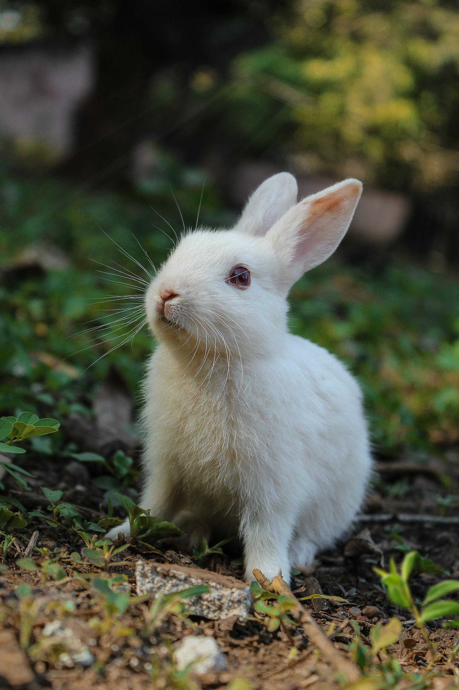
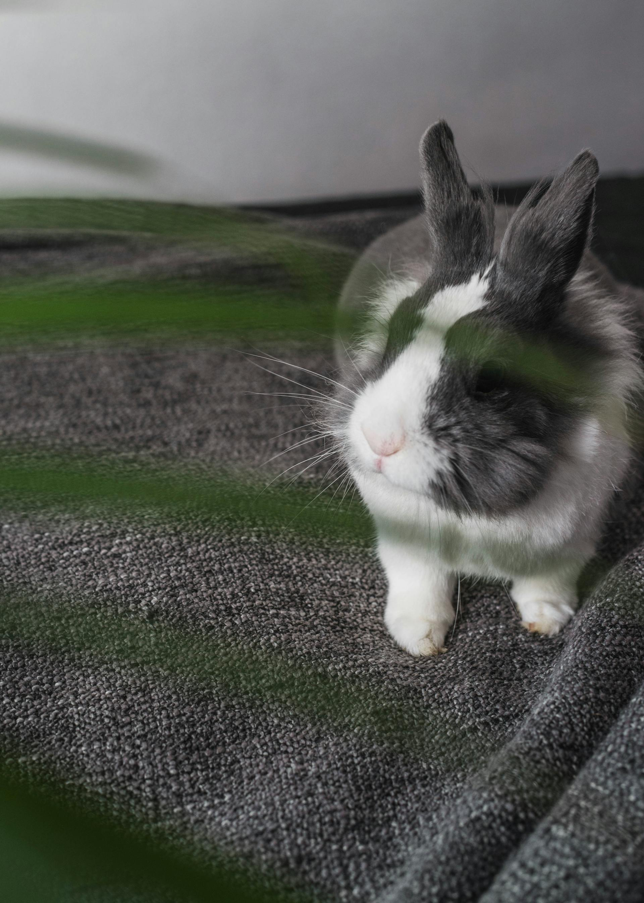
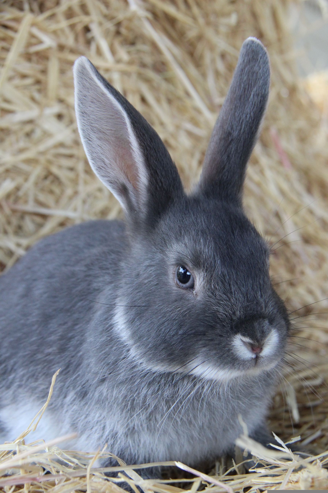
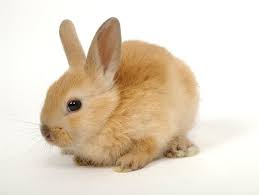
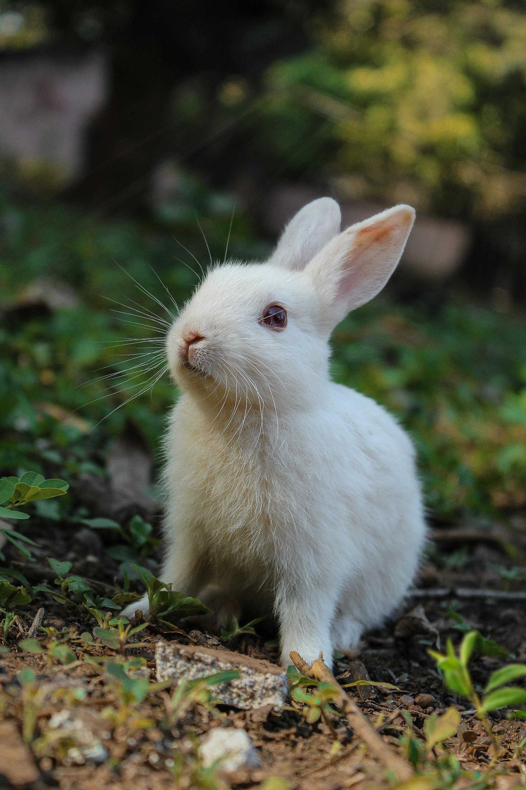
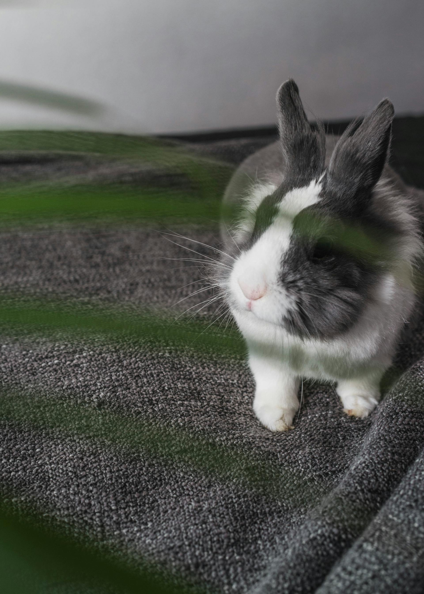
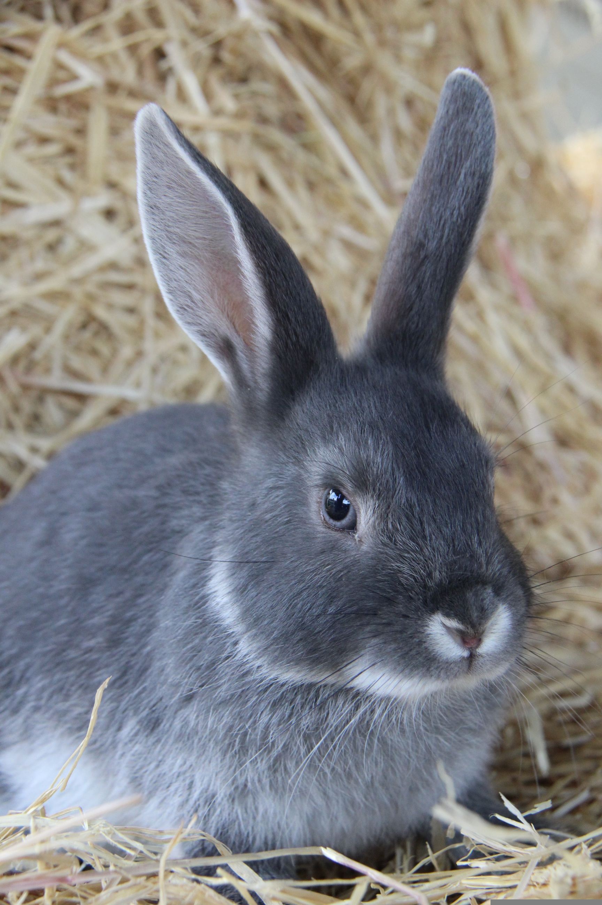
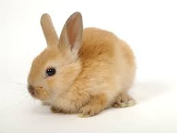

BUNNIES🐰🐇
KRÁLÍCI🐰🐇
Introduction
Bunnies, also known as rabbits, are small mammals in the family Leporidae, which also includes hares. They are found throughout the world and are known for their long ears, strong hind legs, and fluffy tails. Rabbits are herbivores, mainly eating grasses, leaves, and vegetables, and they play important roles in ecosystems as prey animals and soil aerators.
Úvod
Králíci, někdy označovaní také jako zajíci domácí, jsou malí savci z čeledi zajícovitých (Leporidae), do které patří i zajíci. Vyskytují se po celém světě a jsou známí svými dlouhými ušima, silnými zadními nohami a huňatým ocasem. Králíci jsou býložravci, kteří se živí především trávou, listy a zeleninou, a hrají důležitou roli v ekosystémech jako kořist i jako provzdušňovači půdy.
Physical Characteristics
Rabbits are known for their soft fur, long ears, and powerful hind legs which allow them to jump long distances. They have continuously growing teeth that require constant chewing to keep them at the proper length. Most rabbits weigh between 1 and 5 kilograms (2–11 lbs), although some breeds can be much larger.
Tělesné vlastnosti
Králíci jsou známí svou jemnou srstí, dlouhými ušima a silnými zadními končetinami, které jim umožňují skákat na velké vzdálenosti. Jejich zuby neustále rostou, a proto musí pravidelně okusovat potravu, aby si udrželi správnou délku zubů. Většina králíků váží mezi 1 a 5 kilogramy, i když některá plemena mohou být výrazně větší.
Behavior and Social Life
Rabbits are social animals that often live in groups called colonies or warrens. They communicate using body language, thumping their hind legs, and vocalizations like soft grunts or screams when frightened. Rabbits are most active at dawn and dusk, which is known as crepuscular behavior.
Chování a společenský život
Králíci jsou společenská zvířata, která často žijí ve skupinách nazývaných kolonie nebo nory. Komunikují pomocí řeči těla, dupáním zadních nohou a různými zvukovými projevy, jako jsou tiché chrochtání nebo křik při vystrašení. Nejaktivnější jsou za svítání a za soumraku, což se označuje jako soumračná aktivita.
Reproduction
Rabbits are famous for their high reproductive rate. Females (does) can have several litters per year, with each litter ranging from 1 to 12 kits. Newborn rabbits are born blind and hairless, relying entirely on their mother for warmth and food.
Rozmnožování
Králíci jsou známí svou vysokou rozmnožovací schopností. Samice mohou mít několik vrhů ročně, přičemž v jednom vrhu se obvykle narodí 1 až 12 mláďat. Novorození králíci se rodí slepí a bez srsti a jsou zcela odkázáni na svou matku, která jim poskytuje teplo a potravu.
Domesticated Rabbits
Domesticated rabbits are popular pets due to their playful nature and relatively easy care. Breeds vary widely in size, fur type, and color. Some rabbits are bred specifically for showing, while others are kept primarily as companion animals.
Domácí králíci
Domácí králíci jsou oblíbenými mazlíčky díky své hravé povaze a relativně nenáročné péči. Plemena se výrazně liší velikostí, typem srsti i zbarvením. Někteří králíci jsou chováni speciálně pro výstavy, zatímco jiní slouží především jako společníci.
Fun Facts
Rabbits have almost 360-degree vision, which helps them detect predators from nearly all directions.
A rabbit is capable of jumping up to around 1 metre high and approximately 3 metres in length.
Rabbits groom themselves frequently, and grooming another rabbit is a common sign of social bonding.
The longest rabbit on record measured over 1.2 metres in length.
Rabbits can produce more than 20 different vocalisations, including purring, honking and growling.
Zajímavosti
Králíci mají téměř 360stupňové vidění, které jim pomáhá včas odhalit predátory ze všech směrů.
Králík dokáže vyskočit až přibližně 1 metr do výšky a asi 3 metry do dálky.
Králíci se často čistí a vzájemné čištění je běžným znakem sociálního pouta.
Nejdelší zaznamenaný králík měřil přes 1,2 metru na délku.
Králíci dokážou vydávat více než 20 různých zvuků, včetně předení, troubení a vrčení.
Role in Culture and Media
Bunnies appear in folklore, literature, and popular media around the world. Famous examples include the Easter Bunny, Peter Rabbit, and Bugs Bunny. They often symbolize fertility, luck, and innocence.
Role v kultuře a médiích
Králíci se objevují v lidových pověstech, literatuře i populární kultuře po celém světě. Mezi známé příklady patří Velikonoční zajíček, Petr Králík nebo Bugs Bunny. Často symbolizují plodnost, štěstí a nevinnost.
Bonus
 






